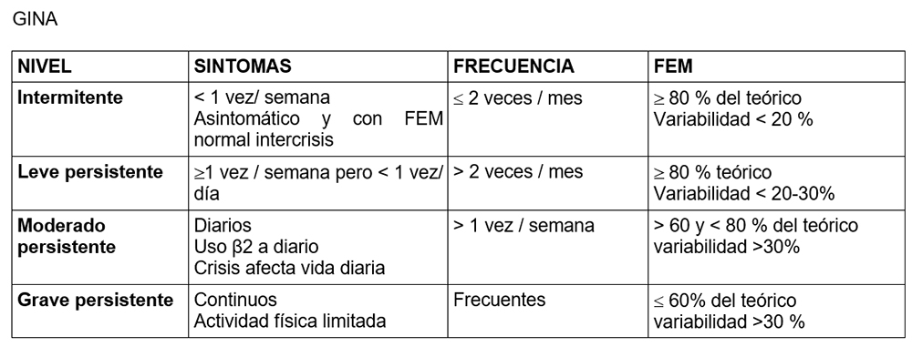

<div class="pages">
  <div data-page="projects" class="page no-toolbar no-navbar">
    <div class="page-content">
    
     <div class="navbarpages">
       <div class="navbar_home_link"><a href="toogle.html"></a></div>
       <div class="navbar_page_center"><b>Especialidades</b></div>
       <div class="menu_open_icon_white"><a href="#" class="open-panel"></a></div>
     </div>
     <div id="pages_maincontent">

          <h2 class="page_subtitle">Asma bronquial</h2>
          <p><b>Autor/a:</b> Rocío Candón Morillo, Alergología, Hospital La Mancha-Centro, Alcázar de San Juan (C. Real)</p>
          <div class="page_single">         
              <div class="buttons-row">
                    <a href="#tab3" class="tab-link active button">Info</a>
                    <a href="#tab4" class="tab-link button">Patogenia</a>
                    <a href="#tab5" class="tab-link button">Clasificaci&oacute;n</a>
              </div>
              <div class="separadormenu_div"></div>
              <div class="buttons-row">
                    <a href="#tab6" class="tab-link button">Clínica</a>
                    <a href="#tab7" class="tab-link button">Tratamiento</a>
              </div>
              
              <div class="tabs-simple">
                    <div class="tabs">
                          <div id="tab3" class="tab active">
                          		<br />
                                <h4>Información</h4>
                                <p class="justify">
                                Enfermedad inflamatoria de vías respiratorias, persistente a largo plazo, caracterizada por hiperreactividad bronquial y reversibilidad de los síntomas de broncoespasmo.
                                </p>
                          </div>
                          
                          <div id="tab4" class="tab">
                          		<br />
                                <h4>Patogenia</h4>
                                <p class="justify">
                                La inflamación bronquial se produce por la respuesta inmune frente al alérgeno y es responsable de las alteraciones anatomopatológicas descritas en el asma: edema de pared, descamación epitelial, infiltración linfocitaria, engrosamiento de la membrana basal hipertrofia del músculo liso bronquial e hiperplasia de glándulas mucosas.
                                </p>
                          </div>
    						<div id="tab5" class="tab">
                          		<br />
                                <h4>Clasificaci&oacute;n</h4>
                                <p class="justify">
                                    
                                </p>
                          </div>
                          <div id="tab6" class="tab">
                          		<br />
                                <h4>Clínica</h4>
                                <p class="nojustify">
                                    &bull;&nbsp;Dificultad para respirar (síntoma fundamental), expresado como disnea, sibilantes u opresión torácica<br /><br />
                                    &bull;&nbsp;Tos habitualmente seca<br /><br />
                                    &bull;&nbsp;Empeoramiento nocturno, con esfuerzos fiscos, en situaciones de estrés o tras hiperventilación (risa) sin típicas del asma.
                                </p>
                          </div> 
                          
                          <div id="tab7" class="tab">
                          		<br />
                                <h4>Tratamiento</h4>
                                <p class="nojustify">
                                <b>GCI:</b> glucocorticoide inhalado<br />
                                <b>LABA:</b> agonista β2-adrenergico de acción larga<br />
                                <b>SABA:</b> Agonista β2-adrenergico de acción corta<br />
                                <b>ARLT:</b> Antagonista de los receptores de leucotrienos<br /><br />
                                1. <u>Escalón 1</u><br />
                                &nbsp;&nbsp;&nbsp;&nbsp;&nbsp;&omicron;&nbsp;&nbsp;A demanda: SABA<br /><br />
                                2. <u>Escalón 2</u><br />
                                &nbsp;&nbsp;&nbsp;&nbsp;&nbsp;&omicron;&nbsp;&nbsp;Mantenimiento GCI a dosis bajas (de elección)  ó ARLT<br />
                                &nbsp;&nbsp;&nbsp;&nbsp;&nbsp;&omicron;&nbsp;&nbsp;A demanda: SABA<br /><br />
                                3. <u>Escalón 3</u><br />
                                &nbsp;&nbsp;&nbsp;&nbsp;&nbsp;&omicron;&nbsp;&nbsp;Mantenimiento <br />
                                &nbsp;&nbsp;&nbsp;&nbsp;&nbsp;&nbsp;&nbsp;&nbsp;&nbsp;&nbsp;&bull;&nbsp;&nbsp;GCI a dosis bajas + LABA (de elección ) <br />
                                &nbsp;&nbsp;&nbsp;&nbsp;&nbsp;&nbsp;&nbsp;&nbsp;&nbsp;&nbsp;&bull;&nbsp;&nbsp;GCI a dosis bajas + ARLT ó GCI a dosis medias<br />
                                &nbsp;&nbsp;&nbsp;&nbsp;&nbsp;&omicron;&nbsp;&nbsp;A demanda : SABA o GCI a dosis bajas + formoterol<br /><br />
                                4. <u>Escalón 4</u><br />
                                &nbsp;&nbsp;&nbsp;&nbsp;&nbsp;&omicron;&nbsp;&nbsp;Mantenimiento <br />
                                &nbsp;&nbsp;&nbsp;&nbsp;&nbsp;&nbsp;&nbsp;&nbsp;&nbsp;&nbsp;&bull;&nbsp;&nbsp;GCI   a dosis medias +LABA (de elección ) <br />
                                &nbsp;&nbsp;&nbsp;&nbsp;&nbsp;&nbsp;&nbsp;&nbsp;&nbsp;&nbsp;&bull;&nbsp;&nbsp;GCI a dosis medias + ARLT <br />
                                &nbsp;&nbsp;&nbsp;&nbsp;&nbsp;&omicron;&nbsp;&nbsp;A demanda : SABA o GCI a dosis bajas + formoterol <br /><br />
                                5. <u>Escalón 5</u><br />
                                &nbsp;&nbsp;&nbsp;&nbsp;&nbsp;&omicron;&nbsp;&nbsp;Mantenimiento <br />
                                &nbsp;&nbsp;&nbsp;&nbsp;&nbsp;&nbsp;&nbsp;&nbsp;&nbsp;&nbsp;&nbsp;&nbsp;i. GCI   a dosis altas +LABA <br />
                                &nbsp;&nbsp;&nbsp;&nbsp;&nbsp;&nbsp;&nbsp;&nbsp;&nbsp;&nbsp;&nbsp;&nbsp;ii. Si mal control añadir: tiotropio y/o ARLT y/o teofilina<br />
                                &nbsp;&nbsp;&nbsp;&nbsp;&nbsp;&nbsp;&nbsp;&nbsp;&nbsp;&nbsp;&nbsp;&nbsp;iii. Si persiste mal control: <br />
                                &nbsp;&nbsp;&nbsp;&nbsp;&nbsp;&nbsp;&nbsp;&nbsp;&nbsp;&nbsp;&nbsp;&nbsp;&nbsp;&nbsp;&nbsp;&nbsp;&nbsp;&nbsp;1. Omalizamab (reservado especialista): asma alérgica<br />
                                &nbsp;&nbsp;&nbsp;&nbsp;&nbsp;&nbsp;&nbsp;&nbsp;&nbsp;&nbsp;&nbsp;&nbsp;&nbsp;&nbsp;&nbsp;&nbsp;&nbsp;&nbsp;2. Azitromizina: asma neutrofílica<br />
                                &nbsp;&nbsp;&nbsp;&nbsp;&nbsp;&omicron;&nbsp;&nbsp;A demanda: SABA o GCI a dosis bajas + formoterol <br /><br />
                                6. <u>Escalón 6:</u><br />
                                &nbsp;&nbsp;&nbsp;&nbsp;&nbsp;&omicron;&nbsp;&nbsp;GCI   a dosis altas + LABA + tiotropio o ARLT o teofilina<br />
                                &nbsp;&nbsp;&nbsp;&nbsp;&nbsp;&omicron;&nbsp;&nbsp;&nbsp;&nbsp;Si  mal control: triamcinolona mi o glucocorticoides orales o  termoplastia ( reservado especialista)

                                </p>
                          </div> 
                    </div>
              </div>        
          </div>     
      </div>  
    </div>
  </div>
</div>